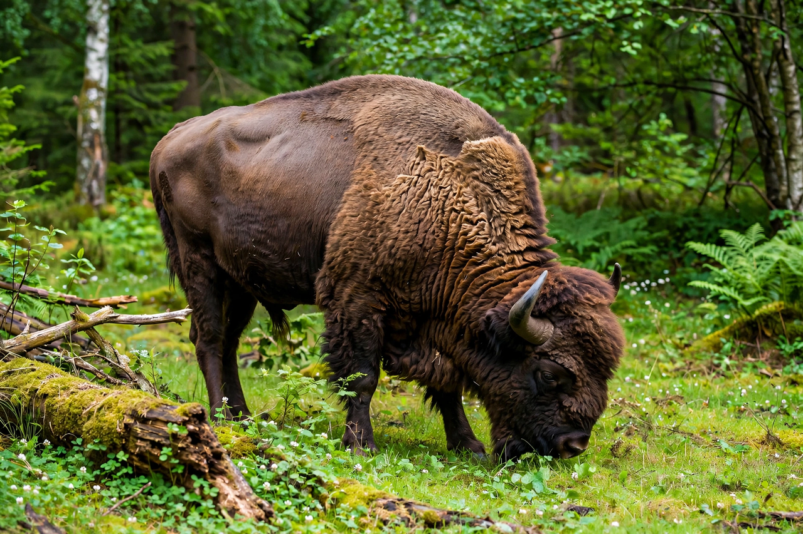

European bison

| Scientific name | Bison bonasus |
|---|---|
| Also called | Wisent; żubr (Polish) |
| Family | Bovidae |
| Height | 1.6–2.0 m at the shoulder |
| Weight | 400–920 kg |
| Conservation status | Near Threatened (IUCN) |
The European bison (Bison bonasus), also known as the wisent, is a Eurasian species of bison and one of the two extant bison species, alongside the American bison. It is among the heaviest surviving wild land animals in Europe, with bulls commonly weighing 400 to 920 kilograms and standing up to two metres at the shoulder.
History and near-extinction
European bison once ranged across lowland Europe, but habitat loss and hunting drove a long decline; the last wild animals in the Białowieża Forest (Poland) were killed in 1919 and the Caucasus population died out by 1927, leaving only 54 survivors in zoos and private collections. A coordinated breeding programme, recorded in the European Bison Pedigree Book, rebuilt the species from just 12 founders. Reintroductions began in Białowieża in 1952, and free-ranging herds now live in Poland, Belarus, Russia, Romania, Slovakia and elsewhere; the global population numbers several thousand, and the species was reclassified from Vulnerable to Near Threatened by the IUCN in 2020.
Biology
Unlike its American relative, the wisent is a forest-adapted browser and mixed feeder, eating grasses, bark, leaves and acorns. Herds are led by older cows; bulls join during the August–October rut. The species can hybridise with domestic cattle (producing żubroń) and with American bison. Two subspecies existed historically: the lowland bison (B. b. bonasus) and the extinct Caucasian bison (B. b. caucasicus).